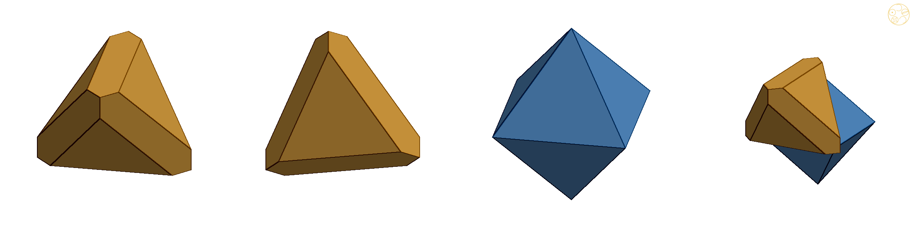
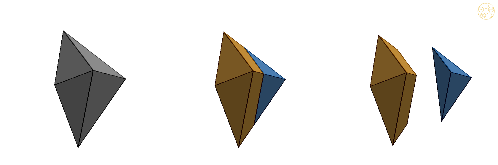
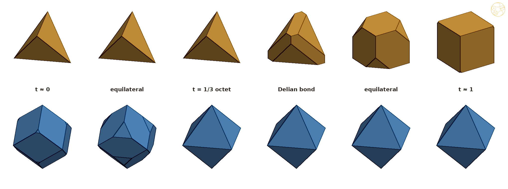
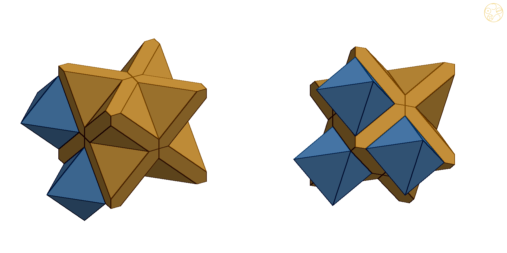

Theorem: one flat cut, slid through every tetrahedron–octahedron pair of the octet, gives a family of pairs of convex solids that fill space, from Kepler's rhombic dodecahedron through the octet to the cube; at one cut the two solids, DICTO's Samson and Delilah, have exactly equal volume, twice the octet's tetrahedron and half its octahedron, and two other cuts make every edge equal

After the icosahedron's golden split, DICTO proposed doing the same for the three Platonic solids that build the octet. The answer turned out to be a slider with the octet in the middle.
Paper #48 [1] cut the thin AXE pieces between icosahedra at the golden point and turned a lattice of icosahedra and its holes into two convex truncated octahedra; its Theorem 4 placed that pair in a one-parameter family of mixed space-fillers, and a remark found the octet in a similar family. On 23 October 2026 DICTO proposed the same approach for the tetrahedron, the octahedron and the cube, and, when the family appeared, to find its special positions first and name them afterwards. He named the equal-volume pair Samson (the cut cube) and Delilah (the octahedron), from "Delian", and the six convex and keyed solids of #48 and this paper together the DICTONIC SOLIDS, held in three DICTONIC BONDS. The Delian position also meets an earlier idea of DICTO's, doubling a solid's volume by the cube root of 2.
The octet is built from tetrahedra and octahedra. Each of them is a bundle of cones, one from its centre over each face. Two cones meet across each shared face and make a double cone, and the double cones fill space too.
Take the octet of edge 1 (the tetrahedral-octahedral honeycomb [3]): regular tetrahedra, of volume VT = √2/12, and regular octahedra, of volume VO = √2/3 = 4VT, two tetrahedra for each octahedron. Each tetrahedron is the union of the 4 cones from its centre over its faces, each octahedron the union of the 8 cones from its centre over its faces, and every face is shared by one tetrahedron and one octahedron. For a shared face F let BF be the double cone formed by its two cones, from the tetrahedron's centre cT through F to the octahedron's centre cO. The double cones fill space without overlap, since the cones do. The segment cTcO is perpendicular to F and meets it at its centre; F lies one third of the way from cT to cO (the tetrahedron's inradius is a third of the sum of the two inradii, 1/(2√6) against 1/√6).
Two classical facts are used. Kepler's rhombic dodecahedron is an octahedron with the 8 tetrahedron cones over its faces added: its 8 three-fold corners are the centres of the neighbouring tetrahedra (volume VO + 8·VT/4 = 6VT), and these rhombic dodecahedra fill space [3, 4]. The cube of edge 1/√2 is a tetrahedron with the 4 octahedron cones over its faces added: its other four corners are the centres of the neighbouring octahedra, each corner piece is an eighth of an octahedron (volume VT + 4·VO/8 = 3VT), and these cubes fill space [4].

Cut every double cone at the same fraction of the way from the tetrahedron's centre to the octahedron's, and give each side to its own centre. Whatever the fraction, the pieces fill space; what they look like depends on whether the cut is before or after the shared face.
Why: every double cone is shared out by one flat cut, so nothing is lost and nothing overlaps. Before the face, the tetrahedron's side is a smaller copy of the tetrahedron, and the octahedron's side is the rhombic dodecahedron with its tips cut off; after the face, it is the other way round with the octahedron and the cube.
Proof. The double cones fill space and each is divided by one plane into two parts with disjoint interiors, so the pieces fill space. (a) For t ≤ 1/3 the plane lies in the tetrahedron's cone, at fraction 3t of the way from cT to F; the 4 parts next to cT are the cones scaled by 3t about cT, which make the tetrahedron scaled by 3t. The parts next to cO are its 8 cones together with the 8 neighbouring tetrahedron cones with their tips removed, that is, the rhombic dodecahedron (§2) cut by the 8 planes: a convex set, being an intersection of convex sets. Each plane cuts the three edges at a three-fold corner at the same fraction 3t of their length, so for t < 1/3 the corners become triangles and the rhombi hexagons. (b) For t ≥ 1/3 the plane lies in the octahedron's cone, at fraction (3/2)(1 − t) = a of the way from cO to F, and the same argument with the roles exchanged gives the octahedron scaled by a and the cube (§2) cut by 4 planes. The volumes follow: (a) 27t³VT, and 6VT − 8·(VT/4)·27t³; (b) a³VO = 4a³VT, and 3VT − 4·(VO/8)·a³. Face to face: a triangle of one piece is exactly the cut face of its neighbour of the other kind, and the hexagons are shared by neighbours of the same kind. The study checks all of this exactly, in rational arithmetic, at t = 1/10, 1/5, 1/3, 1/2, 4/5, 9/10 [5]. ∎

Along the slider, a few positions stand out: two where every edge in the whole filling has the same length, and one where the tetrahedron pieces and the octahedron pieces each take exactly half of space.
Why: each piece has only two kinds of edge, the ones the cut makes and what is left of the old edges. Setting the two equal is one equation, and it has one answer on each side of the octet.
Proof. (a) For t ≤ 1/3 the tetrahedron has edge 3t, and the cut triangles on the rhombic dodecahedron are its faces. The other edges of the cut rhombic dodecahedron are what is left of its edges, of length √6/4, after a fraction 3t at the cut end: (√6/4)(1 − 3t). Equal when 3t = (√6/4)(1 − 3t), that is, t = √6/(12 + 3√6) = (2√6 − 3)/15, where 3t = (2√6 − 3)/5. (b) For t ≥ 1/3 the octahedron has edge a and the cut cube's triangles are its faces; the rest of each cube edge, of length 1/√2, is 1/√2 − a/√2 (each edge of the cube has one cut end, since the cut corners alternate). Equal when a = (1 − a)/√2, that is, a = √2 − 1, t = 1 − 2a/3 = 5/3 − (2/3)√2. (c) Per octahedron there are two tetrahedra; their pieces take half of space when 2(3 − 2a³) = 4a³, a³ = 3/4, t = 1 − (2/3)∛(3/4) = 1 − ∛6/3 (for t ≤ 1/3 the tetrahedron pieces take at most a third). (d) The hexagons of the cut cube lie in the cube's faces and keep its right angles at their two uncut corners (angles 90°, 135°, 135°, 90°, 135°, 135°); those of the cut rhombic dodecahedron keep its acute rhombus angles of about 70.5° (with 144.7° at the cut corners). The study confirms (a)–(c) exactly in ℚ(√6), ℚ(√2) and ℚ(∛6): every edge equal, and the volumes, with no floating point in any equality [5]. ∎
At one position the two pieces weigh the same. There the tetrahedron's piece holds exactly twice the volume of the octet's tetrahedron, and the octahedron's piece exactly half the volume of the octet's octahedron. Doubling a volume means multiplying lengths by the cube root of 2, the problem the ancient Greeks could not solve with ruler and compass; here it happens in both directions at once.
Why: as the cut slides beyond the octet, one piece only grows and the other only shrinks, so they can be equal only once. Setting the two volume formulas equal leaves one number, the cube root of one half.
Proof. For t ≤ 1/3, T(t) ≤ VT while O(t) ≥ 4VT, so they are never equal. For t ≥ 1/3, T(t) = (3 − 2a³)VT decreases with a and O(t) = 4a³VT increases with a, so equality holds for at most one a: 3 − 2a³ = 4a³, a³ = 1/2, a = 2−1/3, tD = 1 − 2a/3. Then both volumes are 2VT = √2/6. The edges are those of the Main theorem (b) at a = 2−1/3. The study confirms it exactly in ℚ(∛2): equal volumes, Delilah's edges, Samson's two edge lengths [5]. ∎

Paper #48 and this paper together give six new or newly framed solids that fill space in pairs. DICTO calls the six the DICTONIC SOLIDS and the three pairs the DICTONIC BONDS.
| Bond | Solids | From | Volumes |
|---|---|---|---|
| Golden | Icosaxes + Unborn Axes | icosahedra, Unborns and AXE, cut at the golden point (#48) | 1 + 2√5/3 and 1 + √5/3 |
| Keyed | Lotus Jewel Axes + Dodecaxes | the Lotus Jewel network, cut the same way (#48) | √5 and 2 |
| Delian | Samson + Delilah | the octet, cut where the volumes are equal (this paper) | √2/6 each |
Table 1. The three DICTONIC BONDS (names by DICTO). Golden and keyed volumes at icosahedron edge 1, Delian at octet edge 1.
Remark (the golden bond, polar). DICTO proposed looking at the solids turned inside out (polar reciprocation about their centres). The truncated octahedron T(x) of #48's Theorem 4 has its square faces at distance (1 + x)s and its hexagons at distance (1 + 2x)s/√3 from its centre (scale s), so its polar has corners at distance 1/((1 + x)s) on the three axes and at (±1, ±1, ±1)/((1 + 2x)s): a cube with a low pyramid on each face (14 corners, 24 triangles, the type of the tetrakis hexahedron). The pyramid's height over the face, measured in half cube edges, is (1 + 2x)/(1 + x) − 1 = x/(1 + x). For the Icosaxes (x = τ) it is τ/(1 + τ) = 1/φ, for the Unborn Axes (x = 1/τ) it is 1/φ², for Kelvin's cell (x = 1) it is 1/2; and for every pair x, 1/x the two heights add to x/(1 + x) + 1/(1 + x) = 1, which is the height of the pyramids that make a cube into Kepler's rhombic dodecahedron. So the polar of the golden bond divides the rhombic dodecahedron's pyramid between its two solids in the golden ratio. The polar of Delilah is a cube; the polar of Samson is an octahedron with low pyramids on four alternate faces; the keyed solids are not convex and have no polar solid. (The polar solids are not claimed to fill space.)
The octet, the oldest mixed filling of tetrahedra and octahedra, sits in the middle of a slider that runs from Kepler's rhombic dodecahedron to the cube. Along it, one position makes the two pieces weigh the same: Samson and Delilah, where one piece doubles and the other halves.
One flat cut per double cone turns the octet into a family of mixed space-fillers, every member convex, with the rhombic dodecahedron and the cube at its ends. Its special members are exact: two fillings with every edge equal, one where the two kinds share space equally, and the Delian bond, where the tetrahedron's piece doubles and the octahedron's halves. With paper #48 this completes DICTO's DICTONIC SOLIDS and BONDS: the golden bond of the icosahedron, its keyed form, and the Delian bond of the octet. Open: the same cut for the cube and octahedron lattices that #48's factor x reaches at its ends (octahedra with cuboctahedra), a single solid for each bond whose copies alone fill space, and printed sets of Samson and Delilah.
The octet, its dual and the ways the cube, the octet and the rhombic dodecahedron are related are old. We did not find the slider itself, its equal-edged members or the Delian bond.
Known. The octet (tetrahedral-octahedral honeycomb) [3]; the rhombic dodecahedron as an octahedron with eight quarter-tetrahedra and as a cube with six pyramids, and the cube as a tetrahedron with four corners [4]; Knoll and Morgan [2] relate the cube packing, the octet and the rhombic dodecahedron packing by stretching, truncation, tetrahedra inscribed in cubes and duality, as separate steps. Weighted Voronoi (power, Laguerre) diagrams [6] give one-parameter families of convex fillings in general; the family here is one of them (the cut planes are the power bisectors of the tetrahedron and octahedron centres). The polar remark rests on the classical duality of the truncated octahedron and the tetrakis hexahedron.
Not found, in the sources listed in Appendix A: the one-parameter family through the octet from rhombic dodecahedra to cubes as such, its two equilateral members, the half-and-half member, the Delian bond (equal volumes, doubling and halving at once), and the golden division of the rhombic dodecahedron's pyramid by the polar golden bond. "Not found" is limited to those sources.
Samson and Delilah are being added to Polyhedraverse among DICTO's pieces, with a Kaleidohedra world, DICTONIC, whose three bond buttons and one slider run through the golden, keyed and Delian bonds (https://dictospheres.com).
[1] DICTO, "The Golden Split: Icosahedra, Unborns and AXE Become Two Convex Space-Fillers", paper #48, DICTO DOI: 10.5281/zenodo.23596362 (2026).
[2] E. Knoll, S. Morgan, "Finding the Dual of the Tetrahedral-Octahedral Space Filler", Bridges: Mathematical Connections in Art, Music, and Science (2003) 205–212.
[3] "Tetrahedral-octahedral honeycomb", Wikipedia (viewed 23 October 2026).
[4] B. Grünbaum, G. C. Shephard, Tilings and Patterns, W. H. Freeman (1987).
[5] DICTO, Shadow forms (study 2026-10-23-shadow-forms, commit 885b786): octet/octet_exact.py → octet-exact.txt (the family at six rational t) and octet/octet_special_exact.py → octet-special-exact.txt (the special members, exact in their number fields).
[6] F. Aurenhammer, "Power diagrams: properties, algorithms and applications", SIAM Journal on Computing 16 (1987) 78–96.
DICTO's reference library (kaleidohedra-references): nothing on this family. Read in full: Knoll and Morgan 2003 [2]. Web, 23 October 2026: searches for cubes with four alternate corners truncated together with octahedra; rhombic dodecahedra truncated at their three-fold corners together with tetrahedra; power (Laguerre) diagrams of the tetrahedral and octahedral holes of the face-centred cubic lattice; tetrahedra and octahedra of equal volume, cube root of 2. Found only the classical octet and its relatives (Wikipedia: tetrahedral-octahedral, quarter cubic and tetragonal disphenoid honeycombs; MathWorld, space-filling polyhedra; Goldberg's catalogue as cited there). Not checked: Wolfram PolyhedronData, Stella / Great Stella libraries.
| Position | t | Tetrahedron piece | Octahedron piece |
|---|---|---|---|
| rhombic dodecahedra | 0 | — | rhombic dodecahedron, 6VT |
| equilateral (a) | (2√6 − 3)/15 ≈ 0.1266 | tetrahedron, edge (2√6 − 3)/5 | cut rhombic dodecahedron, same edge |
| the octet | 1/3 | tetrahedron, edge 1, VT | octahedron, edge 1, 4VT |
| half and half | 1 − ∛6/3 ≈ 0.3943 | cut cube, 3VT/2 | octahedron, a = ∛6/2, 3VT |
| Delian bond | 1 − (2/3)·2−1/3 ≈ 0.4709 | Samson, 2VT | Delilah, edge 2−1/3, 2VT |
| equilateral (b) | 5/3 − (2/3)√2 ≈ 0.7239 | cut cube, edge √2 − 1 | octahedron, edge √2 − 1 |
| cubes | 1 | cube, edge 1/√2, 3VT | — |